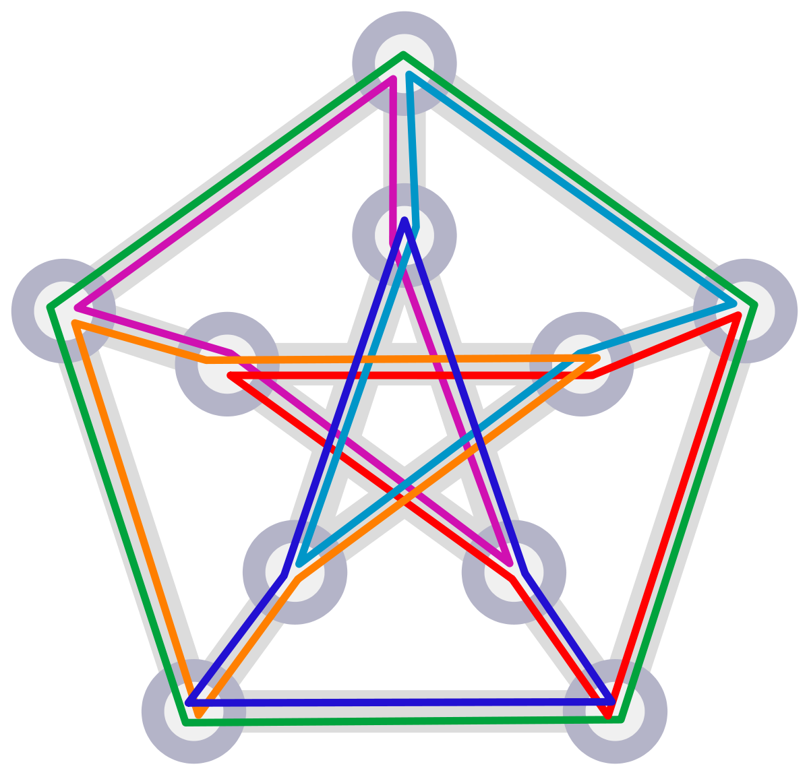

Research Projects
Bean Machine
Facebook Probabilistic Programming Languages
Oct 2019–Present
We developed a probabilistic programming language named Bean Machine, which uses its declarative style to support programmable inference techniques such as compositional inference, block inference, and custom propsers.
PGM 2020 [pdf]
PGM 2020 [pdf]
Newtonian Monte Carlo
Facebook Probabilistic Programming Languages
Oct 2019–Present
Newtonian Monte Carlo is a single-site Markov Chain Monte Carlo proposal algorithm which uses both the first and second order gradients of the target density to determine a suitable proposal density at each point.
StarAI 2020 [pdf]
StarAI 2020 [pdf]

Signals for Contribution in Open Source Projects
Socio-Technical Research Using Data Excavation Lab
Fall 2018–Spring 2019
What makes an open source project attractive to newcomer contribution? To answer this question using data-driven experiments, I converted a variety of possible signals into measurable proxies. I then GitHub repository data to model the number of newcomers as a function of these signals.
CSCW 2019 [pdf]
CSCW 2019 [pdf]
Multi-Word Expressions in Word Embeddings
Linguistics Lab
Fall 2018–Spring 2019
Does the inclusion of multi-word expressions within word embeddings improve the cross-lingual mapping? Using a variety of techniques to identify these expressions, we then tokenized each into one word and compared multi-word translations.
EMNLP 2020 [pdf]
EMNLP 2020 [pdf]
Languages for Cross-lingual Dependency Parsing
Indepedent Study
Spring 2018
Given a specific target language, we wanted to use typological features to identify the optimal combination of languages to train on. Through my linguistic analysis, I determined that the most relevant predictor of cross-lingual success is the adherence of the training dataset to the universally transferable standards.
[pdf]
[pdf]

Domain-Specific Language for NP-Complete Problems
15-418: Parallel Computer Architecture and Programming
Fall 2018
NP-complete problems can be difficult to implement in parallel; we propose a language for the solving and parallelization of NP-complete problems. This language has a simple form to represent NP-complete problems and automatically determines the full solution space and manages the search across different threads.
[pdf]
[pdf]
Automatic Arithmetic Word Problem Solving
10-701: Introduction to Machine Learning
Spring 2018
The best-performing method, which matched numbers to equation templates, performed poorly on problems which included irrelevant information. To combat this, I developed a classifier to find this irrelevant text, which I then removed from the problem.
[pdf]
[pdf]